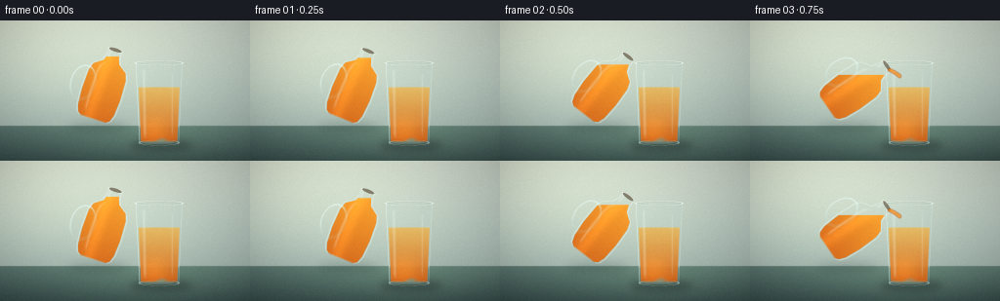
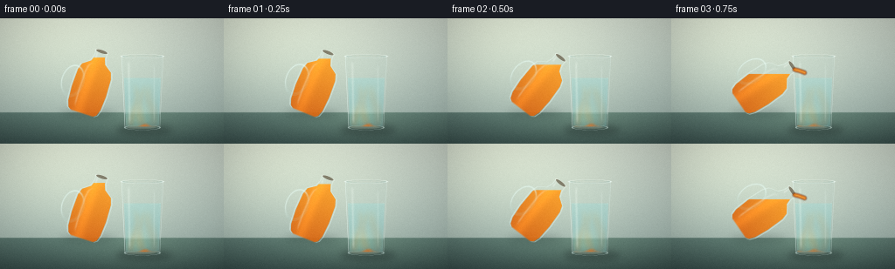
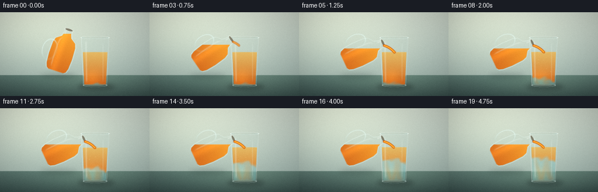
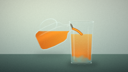
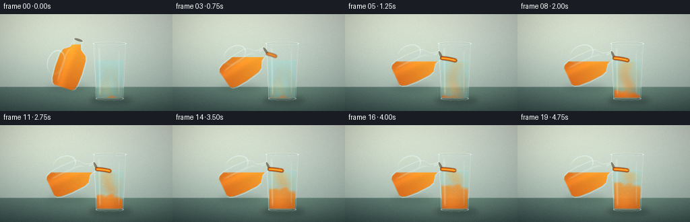
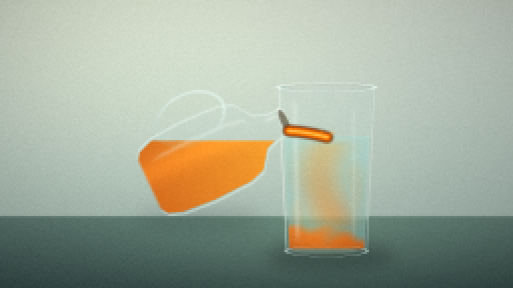
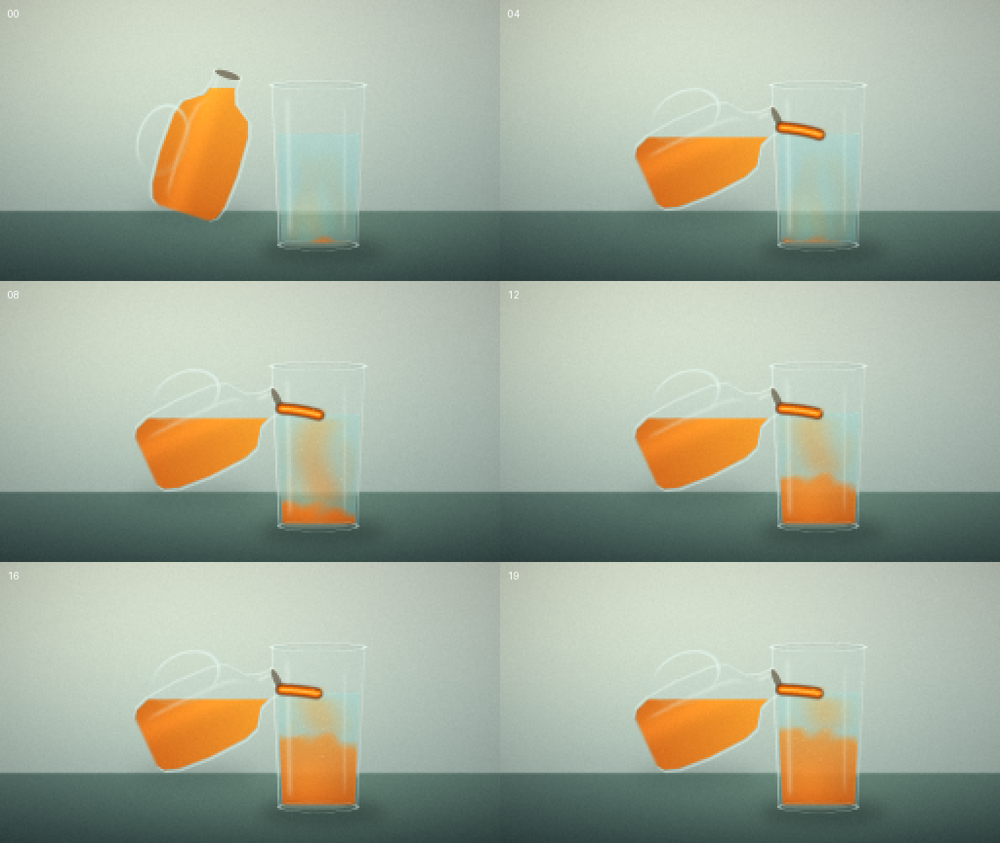
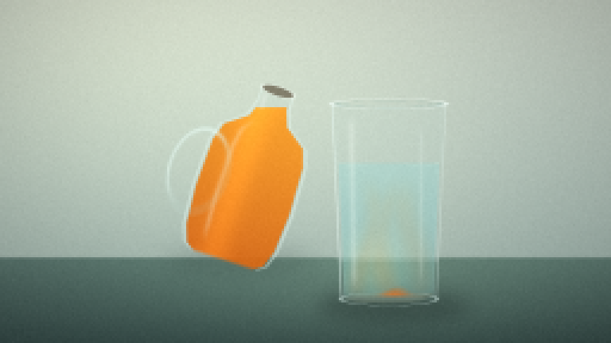

CODING AGENTS AS PIXEL WORLD MODELS
traex/DeepSeek-V4.1-Flash · material_0020
点击播放 · 原生 RGB 像素
逐轮保存的候选
回放视频、检查图与代码变化。
每份候选均可单独播放。实际图片检查记录在下方工具轨迹中。
候选 01播放与检查图
点击播放 · 原生 RGB 像素


展开代码变化
--- 上一保存版本
+++ 本次保存版本
@@ -0,0 +1,378 @@
+from pathlib import Path
+
+import cv2
+import numpy as np
+
+import artifact_io
+
+
+ROOT = Path(__file__).resolve().parent
+W, H = 256, 144
+SS = 4
+RW, RH = W * SS, H * SS
+FRAMES = 20
+FPS = 4.0
+
+
+def clamp01(value):
+ return np.clip(value, 0.0, 1.0)
+
+
+def smoothstep(edge0, edge1, value):
+ denominator = np.asarray(edge1 - edge0, dtype=np.float32)
+ safe_denominator = np.where(np.abs(denominator) < 1e-8, 1.0, denominator)
+ t = clamp01((value - edge0) / safe_denominator)
+ t = np.where(np.abs(denominator) < 1e-8, np.float32(value >= edge1), t)
+ return t * t * (3.0 - 2.0 * t)
+
+
+def color(rgb):
+ return np.asarray(rgb, dtype=np.float32)
+
+
+def mix(a, b, amount):
+ amount = np.asarray(amount, dtype=np.float32)
+ if amount.ndim == 2:
+ amount = amount[..., None]
+ return a * (1.0 - amount) + b * amount
+
+
+def over(image, rgb, alpha):
+ alpha = clamp01(alpha)
+ if alpha.ndim == 2:
+ alpha = alpha[..., None]
+ return image * (1.0 - alpha) + color(rgb) * alpha
+
+
+def blur_mask(mask, sigma):
+ return cv2.GaussianBlur(mask.astype(np.float32), (0, 0), sigma)
+
+
+def soft_ellipse(xx, yy, cx, cy, rx, ry, feather=1.2):
+ radius = np.sqrt(((xx - cx) / rx) ** 2 + ((yy - cy) / ry) ** 2)
+ distance = (radius - 1.0) * min(rx, ry)
+ return smoothstep(feather, -feather, distance)
+
+
+def add_polyline(image, rgb, alpha, points, thickness, blur=0.8):
+ layer = np.zeros((RH, RW), dtype=np.uint8)
+ pts = np.round(np.asarray(points)).astype(np.int32)
+ cv2.polylines(layer, [pts], False, 255, thickness, cv2.LINE_AA)
+ mask = blur_mask(layer.astype(np.float32) / 255.0, blur)
+ return over(image, rgb, mask * alpha)
+
+
+def add_circle(image, rgb, alpha, center, radius, blur=0.6):
+ layer = np.zeros((RH, RW), dtype=np.uint8)
+ cv2.circle(layer, tuple(np.round(center).astype(int)), int(round(radius)), 255, -1, cv2.LINE_AA)
+ mask = blur_mask(layer.astype(np.float32) / 255.0, blur)
+ return over(image, rgb, mask * alpha)
+
+
+def make_background(xx, yy):
+ wall_t = clamp01(yy / (RH * 0.77))
+ wall = mix(color([0.83, 0.87, 0.82]), color([0.65, 0.73, 0.70]), wall_t)
+
+ key_light = np.exp(-(((xx - RW * 0.23) / (RW * 0.43)) ** 2 + ((yy - RH * 0.14) / (RH * 0.55)) ** 2))
+ wall = wall + key_light[..., None] * color([0.09, 0.085, 0.055])
+
+ table_y = RH * 0.75
+ table_t = clamp01((yy - table_y) / (RH - table_y))
+ table = mix(color([0.36, 0.47, 0.44]), color([0.22, 0.31, 0.30]), table_t)
+ table_glow = np.exp(-(((xx - RW * 0.58) / (RW * 0.42)) ** 2 + ((yy - RH * 0.82) / (RH * 0.22)) ** 2))
+ table = table + table_glow[..., None] * color([0.06, 0.075, 0.055])
+
+ horizon = smoothstep(table_y - 2.5, table_y + 2.5, yy)
+ image = mix(wall, table, horizon)
+
+ vignette = 1.0 - 0.23 * clamp01(((xx - RW * 0.5) / (RW * 0.68)) ** 2 + ((yy - RH * 0.48) / (RH * 0.75)) ** 2)
+ return image * vignette[..., None]
+
+
+def carafe_geometry(xx, yy, center_x, center_y, angle):
+ ca, sa = np.cos(angle), np.sin(angle)
+ dx, dy = xx - center_x, yy - center_y
+ u = dx * ca + dy * sa
+ v = -dx * sa + dy * ca
+ return u, v
+
+
+def carafe_profile(v):
+ return np.interp(
+ v,
+ [-176.0, -166.0, -145.0, -118.0, -92.0, -62.0, 20.0, 88.0, 116.0, 126.0],
+ [24.0, 27.0, 28.0, 38.0, 74.0, 84.0, 87.0, 82.0, 72.0, 58.0],
+ )
+
+
+def render_frame(frame_index):
+ t = frame_index / FPS
+ yy, xx = np.mgrid[0:RH, 0:RW].astype(np.float32)
+ image = make_background(xx, yy)
+
+ glass_cx = RW * 0.636
+ glass_top = RH * 0.302
+ glass_bottom = RH * 0.876
+ glass_top_half = RW * 0.094
+ glass_bottom_half = RW * 0.079
+ glass_mid_y = (glass_top + glass_bottom) * 0.5
+
+ # Contact shadows anchor both vessels to the tabletop.
+ glass_shadow = soft_ellipse(xx, yy, glass_cx + 9, glass_bottom + 9, 128, 28, 0.8)
+ glass_shadow = blur_mask(glass_shadow, 15)
+ image = over(image, [0.09, 0.13, 0.13], glass_shadow * 0.34)
+ carafe_shadow = soft_ellipse(xx, yy, RW * 0.39, RH * 0.76, 128, 20, 0.8)
+ carafe_shadow = blur_mask(carafe_shadow, 19)
+ image = over(image, [0.10, 0.14, 0.13], carafe_shadow * 0.20)
+
+ # Tapered tumbler silhouette.
+ glass_s = clamp01((yy - glass_top) / (glass_bottom - glass_top))
+ glass_half = glass_top_half * (1.0 - glass_s) + glass_bottom_half * glass_s
+ glass_body = (
+ smoothstep(glass_half + 1.0, glass_half - 1.0, np.abs(xx - glass_cx))
+ * smoothstep(glass_top - 1.0, glass_top + 1.0, yy)
+ * smoothstep(glass_bottom + 1.0, glass_bottom - 1.0, yy)
+ )
+ # Soften the two lower corners into a vessel-like rounded base.
+ corner_round = smoothstep(glass_bottom - 20, glass_bottom + 1, yy)
+ glass_body *= 1.0 - 0.18 * corner_round * smoothstep(0.80, 1.02, np.abs(xx - glass_cx) / glass_half)
+
+ # The glass slightly displaces and cools the background behind it.
+ shift_x = np.clip((xx + 7 * np.sin(yy * 0.013) + 3).astype(np.int32), 0, RW - 1)
+ shift_y = np.clip((yy - 7).astype(np.int32), 0, RH - 1)
+ refracted = image[shift_y, shift_x]
+ image = mix(image, refracted, glass_body * 0.40)
+ image = over(image, [0.70, 0.84, 0.83], glass_body * 0.10)
+
+ inner_margin = 7.0
+ inner_half = np.maximum(glass_half - inner_margin, 1.0)
+ inner_body = (
+ smoothstep(inner_half + 0.9, inner_half - 0.9, np.abs(xx - glass_cx))
+ * smoothstep(glass_top + 10, glass_top + 13, yy)
+ * smoothstep(glass_bottom - 6, glass_bottom - 9, yy)
+ )
+
+ # Water rises only a little as the juice arrives.
+ water_surface = RH * 0.475 - 7.0 * smoothstep(0.9, 4.7, t)
+ liquid = inner_body * smoothstep(water_surface - 1.0, water_surface + 1.0, yy)
+ liquid_depth = clamp01((yy - water_surface) / (glass_bottom - water_surface))
+
+ water_rgb = mix(color([0.51, 0.80, 0.80]), color([0.34, 0.62, 0.65]), liquid_depth * 0.65)
+ liquid_alpha = liquid * (0.30 + 0.12 * liquid_depth)
+ image = mix(image, water_rgb, liquid_alpha)
+
+ # Orange juice sinks and folds into the water, leaving a bright plume under the stream.
+ layer_height = 155.0 * smoothstep(0.82, 4.72, t) ** 0.86
+ boundary = glass_bottom - layer_height
+ wave = (
+ 12.0 * np.sin(xx * 0.028 + yy * 0.035 + t * 1.45)
+ + 7.0 * np.sin(xx * 0.061 - yy * 0.021 - t * 0.92)
+ + 4.0 * np.sin(xx * 0.105 + yy * 0.073 + t * 2.1)
+ )
+ wave *= 0.42 + 0.58 * smoothstep(boundary - 65, boundary + 10, yy)
+ orange_fraction = 1.0 - smoothstep(-18.0, 18.0, yy - (boundary + wave))
+ orange_fraction *= 1.0 - smoothstep(glass_bottom - 8, glass_bottom + 2, yy)
+
+ impact_x = glass_cx + 2.5 * np.sin(t * 1.3)
+ plume_phase = smoothstep(0.95, 1.45, t)
+ plume_x = impact_x + 16.0 * np.sin((yy - water_surface) * 0.027 + t * 1.35)
+ plume = np.exp(-((xx - plume_x) / 47.0) ** 2)
+ plume *= smoothstep(water_surface - 2, water_surface + 25, yy)
+ plume *= 1.0 - smoothstep(boundary - 42, boundary + 35, yy)
+ orange_fraction = np.maximum(orange_fraction, plume * 0.58 * plume_phase)
+
+ for wisp_index in range(3):
+ phase = t * (0.72 + wisp_index * 0.16) + wisp_index * 1.9
+ wisp_center = glass_cx + (wisp_index - 1) * 39.0 + 17.0 * np.sin(yy * 0.022 + phase)
+ wisp = np.exp(-((xx - wisp_center) / (18.0 + 4.0 * wisp_index)) ** 2)
+ wisp *= smoothstep(water_surface + 12, water_surface + 75, yy)
+ wisp *= 1.0 - smoothstep(glass_bottom - 22, glass_bottom + 2, yy)
+ orange_fraction = np.maximum(orange_fraction, wisp * (0.13 + 0.10 * plume_phase))
+
+ orange_fraction = clamp01(orange_fraction) * liquid
+ orange_depth = clamp01((yy - water_surface) / (glass_bottom - water_surface))
+ orange_rgb = mix(color([1.00, 0.66, 0.16]), color([0.84, 0.32, 0.015]), orange_depth)
+ image = mix(image, orange_rgb, orange_fraction * (0.63 + 0.22 * orange_depth))
+
+ # Diffuse inner glow and a darker, denser lower rim.
+ lower_glow = liquid * np.exp(-(((xx - (glass_cx - 22)) / 60.0) ** 2 + ((yy - (glass_bottom - 48)) / 58.0) ** 2))
+ image = image + lower_glow[..., None] * color([0.11, 0.07, 0.01])
+ image = over(image, [0.23, 0.17, 0.07], liquid * smoothstep(glass_bottom - 20, glass_bottom, yy) * 0.18)
+
+ # Water surface ellipse, with a small impact ripple.
+ surface_half = np.interp(water_surface, [glass_top, glass_bottom], [glass_top_half - 8, glass_bottom_half - 8])
+ surface_ring = np.abs(
+ np.sqrt(((xx - glass_cx) / surface_half) ** 2 + ((yy - water_surface) / 4.0) ** 2) - 1.0
+ )
+ surface_mask = liquid * smoothstep(0.09, 0.01, surface_ring)
+ image = over(image, [0.84, 0.96, 0.90], surface_mask * 0.42)
+
+ ripple_time = t - 0.9
+ if ripple_time > 0:
+ for ripple_index in range(3):
+ age = (ripple_time + ripple_index * 0.37) % 1.12
+ radius = 8.0 + 40.0 * age
+ ripple = np.abs(np.sqrt(((xx - impact_x) / radius) ** 2 + ((yy - water_surface) / (3.0 + radius * 0.065)) ** 2) - 1.0)
+ ripple_mask = smoothstep(0.11, 0.01, ripple) * (1.0 - age / 1.12)
+ ripple_mask *= smoothstep(water_surface - 6, water_surface + 2, yy)
+ ripple_mask *= 1.0 - smoothstep(water_surface + 7, water_surface + 12, yy)
+ image = over(image, [0.95, 0.88, 0.66], ripple_mask * 0.38)
+
+ # Front glass walls, rim and tall studio highlights.
+ abs_u = np.abs(xx - glass_cx)
+ edge = np.abs(abs_u - glass_half)
+ edge_mask = smoothstep(3.4, 1.2, edge) * glass_body
+ left_side = smoothstep(glass_cx, glass_cx - glass_top_half, xx)
+ image = over(image, [0.91, 0.98, 0.96], edge_mask * (0.31 + 0.33 * left_side))
+ inner_edge = smoothstep(2.0, 0.4, np.abs(abs_u - inner_half)) * inner_body
+ image = over(image, [0.86, 0.95, 0.93], inner_edge * 0.18)
+
+ highlight_1 = np.exp(-((xx - (glass_cx - glass_top_half * 0.63 + (yy - glass_mid_y) * 0.018)) / 5.2) ** 2)
+ highlight_1 *= smoothstep(glass_top + 16, glass_top + 42, yy) * (1.0 - smoothstep(glass_bottom - 45, glass_bottom - 13, yy))
+ image = over(image, [0.96, 1.00, 0.97], highlight_1 * 0.26)
+ highlight_2 = np.exp(-((xx - (glass_cx + glass_top_half * 0.56)) / 3.3) ** 2)
+ highlight_2 *= smoothstep(glass_top + 28, glass_top + 65, yy) * (1.0 - smoothstep(glass_bottom - 60, glass_bottom - 18, yy))
+ image = over(image, [0.92, 0.98, 0.96], highlight_2 * 0.18)
+
+ rim_outer = np.abs(
+ np.sqrt(((xx - glass_cx) / glass_top_half) ** 2 + ((yy - glass_top) / 9.0) ** 2) - 1.0
+ )
+ rim_mask = smoothstep(0.075, 0.018, rim_outer)
+ image = over(image, [0.94, 0.99, 0.97], rim_mask * 0.72)
+ rim_inner = np.abs(
+ np.sqrt(((xx - glass_cx) / (glass_top_half - 9.0)) ** 2 + ((yy - (glass_top + 1)) / 5.0) ** 2) - 1.0
+ )
+ image = over(image, [0.47, 0.66, 0.64], smoothstep(0.08, 0.018, rim_inner) * 0.38)
+
+ base_ring = np.abs(
+ np.sqrt(((xx - glass_cx) / glass_bottom_half) ** 2 + ((yy - (glass_bottom - 3)) / 11.0) ** 2) - 1.0
+ )
+ base_mask = smoothstep(0.06, 0.012, base_ring) * smoothstep(glass_bottom - 17, glass_bottom - 8, yy)
+ image = over(image, [0.82, 0.91, 0.89], base_mask * 0.60)
+ foot_glow = soft_ellipse(xx, yy, glass_cx - 5, glass_bottom - 4, glass_bottom_half * 0.82, 8, 1.0)
+ image = over(image, [0.95, 0.93, 0.79], foot_glow * 0.14)
+
+ # Tilted clear carafe of orange juice.
+ tilt = np.deg2rad(18.0 + 47.0 * smoothstep(0.08, 1.02, t))
+ carafe_cx, carafe_cy = RW * 0.410, RH * 0.492
+ u, v = carafe_geometry(xx, yy, carafe_cx, carafe_cy, tilt)
+ half_w = carafe_profile(v)
+ vertical = smoothstep(-178, -172, v) * smoothstep(130, 121, v)
+ carafe_body = smoothstep(half_w + 1.0, half_w - 1.0, np.abs(u)) * vertical
+ carafe_inner = smoothstep(half_w - 5.0 + 0.8, half_w - 5.0 - 0.8, np.abs(u)) * vertical
+
+ mouth_x = carafe_cx + 19.0 * np.cos(tilt) + 170.0 * np.sin(tilt)
+ mouth_y = carafe_cy + 19.0 * np.sin(tilt) - 170.0 * np.cos(tilt)
+ fluid_level = mouth_y + 20.0
+
+ image = mix(image, image, carafe_body * 0.08)
+ image = over(image, [0.72, 0.84, 0.82], carafe_body * 0.08)
+
+ juice_inside = carafe_inner * smoothstep(fluid_level - 1.0, fluid_level + 1.0, yy)
+ local_depth = clamp01((v + 170.0) / 290.0)
+ carafe_orange = mix(color([1.00, 0.61, 0.10]), color([0.79, 0.27, 0.008]), local_depth * 0.82)
+ carafe_orange = carafe_orange + np.exp(-((u + 20.0) / 26.0) ** 2)[..., None] * color([0.12, 0.09, 0.02])
+ image = mix(image, carafe_orange, juice_inside * 0.91)
+ image = over(image, [1.0, 0.77, 0.30], juice_inside * smoothstep(fluid_level - 4, fluid_level + 1, yy) * 0.16)
+
+ # Handle: a clear loop with a bright upper-left edge.
+ hu = (u + 86.0) / 49.0
+ hv = (v + 4.0) / 71.0
+ handle_radius = np.sqrt(hu * hu + hv * hv)
+ handle_band = smoothstep(0.15, 0.075, np.abs(handle_radius - 1.0))
+ image = over(image, [0.76, 0.88, 0.85], handle_band * 0.11)
+ handle_edge = smoothstep(0.075, 0.018, np.abs(handle_radius - 1.0))
+ handle_light = smoothstep(0.1, 1.0, (-hu - hv) * 0.5 + 0.5)
+ image = over(image, [0.92, 0.99, 0.96], handle_edge * handle_light * 0.52)
+
+ carafe_edge = smoothstep(3.4, 1.0, np.abs(np.abs(u) - half_w)) * vertical
+ image = over(image, [0.91, 0.98, 0.95], carafe_edge * 0.45)
+ carafe_highlight = np.exp(-((u + half_w * 0.52) / 4.3) ** 2)
+ carafe_highlight *= smoothstep(-120, -88, v) * smoothstep(112, 72, v)
+ image = over(image, [0.97, 1.0, 0.97], carafe_highlight * 0.25)
+
+ # Opening of the carafe, dark interior and a crisp lip.
+ opening_r = np.sqrt((u / 29.0) ** 2 + ((v + 171.0) / 8.0) ** 2)
+ opening = smoothstep(1.02, 0.92, opening_r)
+ image = over(image, [0.20, 0.12, 0.035], opening * 0.50)
+ opening_rim = smoothstep(0.13, 0.025, np.abs(opening_r - 1.0))
+ image = over(image, [0.96, 1.0, 0.96], opening_rim * 0.72)
+ neck_glint = np.exp(-((u + 18.0) / 4.0) ** 2) * smoothstep(-166, -156, v) * smoothstep(-130, -142, v)
+ image = over(image, [0.98, 1.0, 0.98], neck_glint * 0.34)
+
+ # Juice stream extends from the lip to the water surface.
+ pour = smoothstep(0.55, 0.94, t)
+ if pour > 0:
+ landing_x = impact_x
+ landing_y = water_surface + 2.0
+ control_x = mouth_x + (landing_x - mouth_x) * 0.48 + 5.0
+ control_y = mouth_y + (landing_y - mouth_y) * 0.22
+ curve = []
+ for step in range(90):
+ q = step / 89.0
+ px = (1 - q) ** 2 * mouth_x + 2 * (1 - q) * q * control_x + q * q * landing_x
+ py = (1 - q) ** 2 * mouth_y + 2 * (1 - q) * q * control_y + q * q * landing_y
+ curve.append((px, py))
+ visible_count = max(2, int(len(curve) * smoothstep(0.55, 0.95, t)))
+ stream_points = curve[:visible_count]
+ image = add_polyline(image, [0.72, 0.25, 0.01], 0.90 * pour, stream_points, 15, 1.1)
+ image = add_polyline(image, [0.99, 0.54, 0.045], 0.98 * pour, stream_points, 9, 0.9)
+ image = add_polyline(image, [1.0, 0.76, 0.28], 0.78 * pour, stream_points, 3, 0.7)
+
+ if t > 0.82:
+ splash = smoothstep(0.82, 1.05, t)
+ for drop_index in range(5):
+ side = -1 if drop_index % 2 == 0 else 1
+ drop_age = (t - 0.82 + drop_index * 0.19) % 0.75
+ dx = side * (5 + 15 * drop_age)
+ dy = -10 * np.sin(drop_age * np.pi) + 1.0
+ radius = 2.2 + 0.9 * (drop_index % 2)
+ image = add_circle(
+ image,
+ [1.0, 0.67, 0.18],
+ 0.64 * splash * (1.0 - drop_age / 0.75),
+ (impact_x + dx, water_surface + dy),
+ radius,
+ 0.65,
+ )
+
+ # A few tiny suspended bubbles catch light near the pour.
+ if t > 1.05:
+ bubble_strength = smoothstep(1.05, 1.6, t)
+ for bubble_index in range(10):
+ seed = bubble_index * 2.399 + 0.41
+ bx = glass_cx + 52 * np.sin(seed * 2.1 + t * 0.18) * (0.35 + 0.65 * ((bubble_index * 37) % 11) / 10)
+ by = water_surface + 22 + (bubble_index * 19.3 + t * 8.0) % 120
+ radius = 1.2 + (bubble_index % 3) * 0.55
+ image = add_circle(image, [1.0, 0.88, 0.58], bubble_strength * 0.28, (bx, by), radius, 0.55)
+
+ # Gentle lens glow and film grain keep the low-resolution result from looking flat.
+ glow = np.exp(-(((xx - glass_cx) / 175.0) ** 2 + ((yy - RH * 0.55) / 220.0) ** 2))
+ image = image + glow[..., None] * color([0.018, 0.014, 0.006])
+
+ image = np.clip(image, 0.0, 1.0)
+ frame = cv2.resize(image, (W, H), interpolation=cv2.INTER_AREA)
+ rng = np.random.default_rng(9107 + frame_index)
+ grain = rng.normal(0.0, 0.0055, (H, W, 1)).astype(np.float32)
+ frame = np.clip(frame + grain, 0.0, 1.0)
+ return np.round(frame * 255.0).astype(np.uint8)
+
+
+def main():
+ frames = np.stack([render_frame(index) for index in range(FRAMES)], axis=0)
+ artifact_io.save(frames, ROOT)
+
+ writer = cv2.VideoWriter(
+ str(ROOT / "video.mp4"),
+ cv2.VideoWriter_fourcc(*"mp4v"),
+ FPS,
+ (W, H),
+ )
+ for frame in frames:
+ writer.write(cv2.cvtColor(frame, cv2.COLOR_RGB2BGR))
+ writer.release()
+ print(f"generated {len(frames)} frames at {W}x{H}, {FPS:g} fps")
+
+
+if __name__ == "__main__":
+ main()
候选 02播放与检查图
点击播放 · 原生 RGB 像素


展开代码变化
--- 上一保存版本
+++ 本次保存版本
@@ -157,8 +157,8 @@
liquid = inner_body * smoothstep(water_surface - 1.0, water_surface + 1.0, yy)
liquid_depth = clamp01((yy - water_surface) / (glass_bottom - water_surface))
- water_rgb = mix(color([0.51, 0.80, 0.80]), color([0.34, 0.62, 0.65]), liquid_depth * 0.65)
- liquid_alpha = liquid * (0.30 + 0.12 * liquid_depth)
+ water_rgb = mix(color([0.53, 0.86, 0.87]), color([0.32, 0.64, 0.69]), liquid_depth * 0.68)
+ liquid_alpha = liquid * (0.26 + 0.12 * liquid_depth)
image = mix(image, water_rgb, liquid_alpha)
# Orange juice sinks and folds into the water, leaving a bright plume under the stream.
@@ -170,7 +170,7 @@
+ 4.0 * np.sin(xx * 0.105 + yy * 0.073 + t * 2.1)
)
wave *= 0.42 + 0.58 * smoothstep(boundary - 65, boundary + 10, yy)
- orange_fraction = 1.0 - smoothstep(-18.0, 18.0, yy - (boundary + wave))
+ orange_fraction = smoothstep(-18.0, 18.0, yy - (boundary + wave))
orange_fraction *= 1.0 - smoothstep(glass_bottom - 8, glass_bottom + 2, yy)
impact_x = glass_cx + 2.5 * np.sin(t * 1.3)
@@ -254,7 +254,7 @@
# Tilted clear carafe of orange juice.
tilt = np.deg2rad(18.0 + 47.0 * smoothstep(0.08, 1.02, t))
- carafe_cx, carafe_cy = RW * 0.410, RH * 0.492
+ carafe_cx, carafe_cy = RW * 0.403, RH * 0.548
u, v = carafe_geometry(xx, yy, carafe_cx, carafe_cy, tilt)
half_w = carafe_profile(v)
vertical = smoothstep(-178, -172, v) * smoothstep(130, 121, v)
@@ -315,9 +315,10 @@
curve.append((px, py))
visible_count = max(2, int(len(curve) * smoothstep(0.55, 0.95, t)))
stream_points = curve[:visible_count]
- image = add_polyline(image, [0.72, 0.25, 0.01], 0.90 * pour, stream_points, 15, 1.1)
- image = add_polyline(image, [0.99, 0.54, 0.045], 0.98 * pour, stream_points, 9, 0.9)
- image = add_polyline(image, [1.0, 0.76, 0.28], 0.78 * pour, stream_points, 3, 0.7)
+ image = add_polyline(image, [0.40, 0.17, 0.015], 0.82 * pour, stream_points, 22, 1.6)
+ image = add_polyline(image, [0.78, 0.29, 0.008], 0.98 * pour, stream_points, 15, 1.1)
+ image = add_polyline(image, [1.0, 0.52, 0.035], 0.98 * pour, stream_points, 9, 0.9)
+ image = add_polyline(image, [1.0, 0.82, 0.40], 0.82 * pour, stream_points, 2, 0.55)
if t > 0.82:
splash = smoothstep(0.82, 1.05, t)
可观测工具轨迹
实际执行的命令与返回图片。
命令 1exit 0
/bin/bash -c "sed -n '1,240p' prompt.txt"
命令 2exit 0
/bin/bash -c "sed -n '1,280p' GENERATION_RULES.md"
命令 3exit 0
/bin/bash -c 'cat task_spec.json'
命令 4exit 0
/bin/bash -c "find . -maxdepth 2 -type f -printf '%p\\n' | sort | sed -n '1,240p'"
命令 5exit 0
/bin/bash -c "sed -n '1,280p' artifact_io.py"
命令 6exit 0
/bin/bash -c "sed -n '1,240p' player_template.html"
命令 7exit 0
/bin/bash -c "python - <<'PY' import importlib.util for m in ['numpy','PIL','cv2','scipy','imageio','matplotlib']: print(m, bool(importlib.util.find_spec(m))) PY"
命令 8exit 1
/bin/bash -c 'python generate.py'
命令 9exit 1
/bin/bash -c 'python generate.py'
命令 10exit 0
/bin/bash -c 'python generate.py'
命令 11exit 0
/bin/bash -c 'python generate.py'
命令 12exit 0
/bin/bash -c "python - <<'PY'
from PIL import Image
im=Image.open('frames/08.png')
im.resize((1024,576), Image.Resampling.NEAREST).save('preview08.png')
PY"命令 13exit 0
/bin/bash -c "python - <<'PY'
from PIL import Image, ImageDraw
inds=[0,4,8,12,16,19]
out=Image.new('RGB',(512*2,288*3),(20,24,28))
d=ImageDraw.Draw(out)
for i,n in enumerate(inds):
im=Image.open(f'frames/{n:02d}.png').resize((512,288),Image.Resampling.NEAREST)
x=(i%2)*512;y=(i//2)*288
out.paste(im,(x,y));d.text((x+8,y+8),f'{n:02d}',fill='white')
out.save('preview_multi.png')
PY"命令 14exit 0
/bin/bash -c "python - <<'PY'
from PIL import Image
Image.open('frames/00.png').resize((1024,576),Image.Resampling.NEAREST).save('preview00.png')
PY"视觉工具实际返回图片 1

视觉工具实际返回图片 2

视觉工具实际返回图片 3

视觉工具实际返回图片 4

视觉工具实际返回图片 5

视觉工具实际返回图片 6

保存候选 2 份；完成命令 14 次；可验证图片返回 6 张。原始 API 响应与完整日志保留在本地。